| Bedeutung | Beschreibung | Bildliche Darstellung | Vereinfachte Darstellung |
| Achtung Anfang Vorsicht |
Rechten Arm nach oben halten, Handfläche zeigt nach vorn | 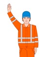 |
|
| Halt Unterbrechung Bewegung nicht weiter ausführen |
Beide Arme seitwärts waagerecht ausstrecken, Handflächen zeigen nach vorn | 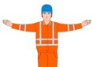 |
|
| Halt Gefahr |
Beide Arme seitwärts waagerecht ausstrecken, Handflächen zeigen nach vorn und Arme abwechselnd anwinkeln und strecken | 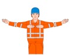 |
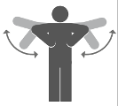 |
| Bedeutung | Beschreibung | Bildliche Darstellung | Vereinfachte Darstellung |
| Heben Auf |
Rechten Arm nach oben halten, Handfläche zeigt nach vorn und macht eine langsame, kreisende Bewegung | 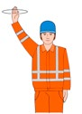 |
|
| Senken Ab |
Rechten Arm nach unten halten, Handfläche zeigt nach innen und macht eine langsame kreisende Bewegung | 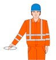 |
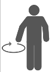 |
| Langsam | Rechten Arm waagerecht ausstrecken, Handfläche zeigt nach unten und wird langsam auf- und abbewegt | 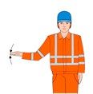 |
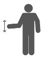 |
| Bedeutung | Beschreibung | Bildliche Darstellung | Vereinfachte Darstellung |
| Abfahren | Rechten Arm nach oben halten, Handfläche zeigt nach vorn und Arm seitlich hin- und herbewegen | 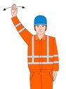 |
|
| Herkommen | Beide Arme beugen, Handflächen zeigen nach innen und mit den Unterarmen heranwinken | 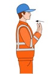 |
|
| Entfernen | Beide Arme beugen, Handflächen zeigen nach außen und mit den Unterarmen wegwinken | 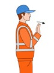 |
|
| Rechts fahren – vom Einweiser aus gesehen | Den rechten Arm in horizontaler Haltung leicht anwinkeln und seitlich hin- und herbewegen | 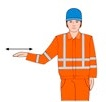 |
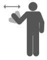 |
| Links fahren – vom Einweiser aus gesehen | Den linken Arm in horizontaler Haltung leicht anwinkeln und seitlich hin- und herbewegen | 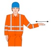 |
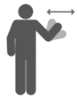 |
| Anzeige einer Abstandsverringerung | Beide Handflächen parallel halten und dem Abstand entsprechend zusammenführen | 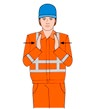 |
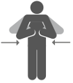 |